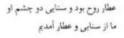

Sultanü’l-Ulema’nın, fikir ve inanç ayrılığı yüzünden Belh’ten göç ettiği bir gerçektir. Çünkü Harzemşah’ın, Kübreviyye Tarikatı mensupları ile arası iyi değildi. Bahaeddin Veled hazretleri Necmeddin Kübra’nın halîfelerindendi. Felsefi düşüncelere kapılıp akla değer verenlerin şeriat yolunda olmadıklarını çekinmeden vaazlarında söylüyordu. Kendisini çekemeyen bilginler, pâdişâhla arasını açmışlardı. Bu sıralarda, Necmeddin Kübra hazretlerinin halîfelerinden Mecdeddin Bağdadî, Harzemşah’ın emri ile Ceyhun Irmağı’na atılarak boğdurulmuştu. Sultanü’l-Ulema bir taraftan kıskanılıyor, bir taraftan da baskı altında bulunuyordu. Bunun üzerine, bir fitneye sebep olmamak için göç etmeye karar verdi.
Bahaeddin Veled hazretlerinin hangi tarihte Belh’ten göç ettiği katî olarak bilinmemektedir. En yakın müritlerini, halîfelerini ve ailesini yanına alarak Belh şehrini terk etti. Bahaeddin Veled hazretlerinin yanında refikası Mümine Hatun ile büyük oğlu Alaeddin Mehmed ve küçük oğlu Celâleddîn Mehmed bulunuyordu. Akrabalarının bir kısmı Belh’te kalmıştı.
Bu göç başladığı zaman Celâleddîn Mehmed yani Mevlânâ kaç yaşında idi? Bu katî olarak bilinmiyor. Bazıları on dört, bazıları yirmi bir yaşında olduğunu yazmaktadırlar.
Göç kervanının ilk önemli durağı Nişabur şehri oldu. Bu şehir de Belh gibi o devrin en mühim ilim ve irfan merkezlerinden biri idi. Üstelik bu şehirde Sultanü’l-Ulema’nın pîrdaşı Feridüddin-i Attar hazretleri yaşıyordu. Attar hazretleri Sultanü’l-Ulema’nın Nişabur’a teşrifini haber alır almaz konakladığı yere geldi.
İki veli, “Marace’l-bahreyni yeltegıyan” (Rahman Sûresi, 19. âyet) sırrına mazhar oldular. Derler ki, bu buluşmada Feridüddin-i Attar hazretleri, Celâleddîn Mehmed’in mânevî büyüklüğünü sezmiş de babasına, “Umarım ki senin bu oğlun, yakın zamanda, âlemde ilâhî aşkla yanacak gönüllere ateş salacaktır.” demişti. İlk gençlik çağında olan Celâleddîn Mehmed’e, ilâhî sırlara aşina olacak bu delikanlıya, Esrâr-nâme adlı kitabını armağan olarak vermekten zevk duydu. Mevlânâ Esrâr-nâme’yi pek sevdi. Onu daima yanında sakladı. Seneler geçti, Mesnevî’sini yazdırırken, oraya Esrâr-nâme’den hikâyeler aldığı gibi fırsat düşünce de Attar hazretlerine olan sevgisini ifâde etti. Divan-ı Kebîr’ inde,

“Attar, rûh idi. Senayî de onun iki gözü. Biz hakikat meydanına Senayî ve Attar’dan sonra geldik. Onları izledik.”
diye buyurdu.